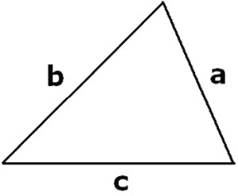
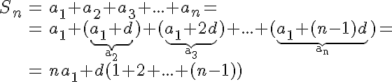

Számítások
Matematika
A matematikát nehéz pontosan meghatározni, mibenlétének kérdése még manapság is, sőt manapság különösen, vita tárgya, élő és nem lezárt tudományos probléma, mellyel a matematikafilozófia (a filozófia egyik területe, sőt már-már önálló tudományága) foglalkozik.
Amíg a matematikába sorolt tevékenységekről, módszerekről és fogalmakról (vagyis mi az, ami a matematika körébe tartozik, és mi az, ami nem) ha nem is teljes, de nagy fokú és vitákat alig-alig kiváltó egyetértés alakult ki, addig a matematika által tanulmányozott fogalmak lételméleti helyzetéről, ismeretelméleti megközelítéséről, magának a matematikának mint tevékenységnek a jellegéről, sőt céljáról („keményvonalas” természet- vagy pedig „szoft” társadalomtudomány, esetleg művészet; empirikus vagy inkább normatív, stb.) a legkülönfélébb releváns elképzelések léteznek egymással párhuzamosan.
Forrás: Wikipédia
Háromszög kerülete
Add meg a háromszög oldalait!
a =
b =
c =
Számtani sorozat
Első elem: a1=
Differenciál: d=
Elemek száma: n=
Szorzótábla
Hőmérséklet átváltás
°C
Kelvin
Fahrenheit
Kölcsön törlesztő részlet kalkulátor
Felvett összeg:
1 10
Futamidő:
12 72